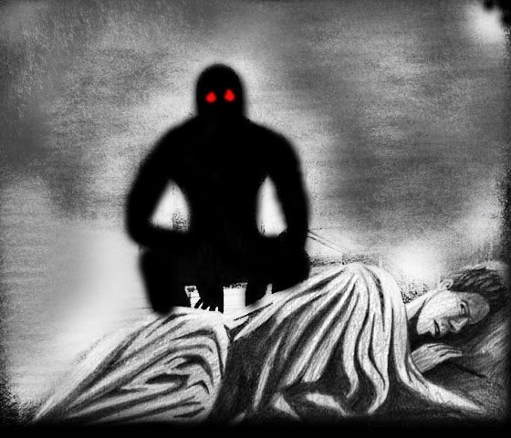
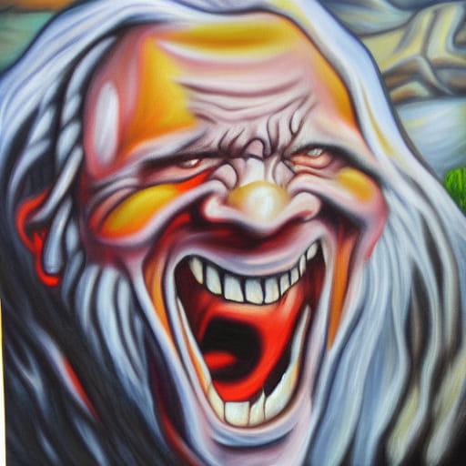
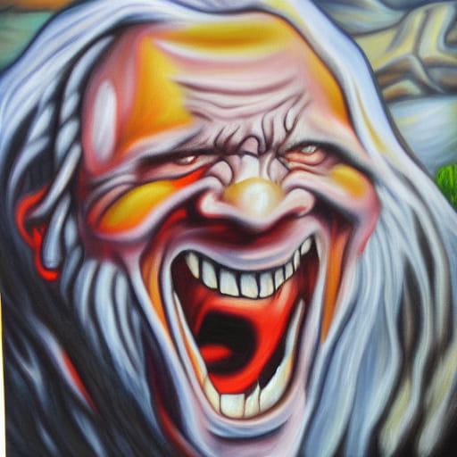

¡Una pequeña presentacion!
Buenos Dias, Tardes o Noches, segun el horario en que esten leyendo esto, mi nombre es Cravense, y este es un portal a mi universo. si bien aun no tengo ninguna novela publicada espero pronto ese sueño se haga realidad. pero por ahora, disfrutaran de, como dije antes, historias, cuentos cortos e imagenes que los haran situarse en lugares tanto fantasticos luchando para un ejercito de campeones a espada y escudo como encontrarse solos en los lugares mas aterradores, surrealistas y espectaculares sacados de mundos lejanos y olvidados o sentirse perdidos en rincones que jamas creyeron que existirian siendo acechados por alguna bestia aterradora, o en su propio garage siendo perseguidos por un espiritu que quiera arrancarles el alma. luego de estas palabras les doy la bienvenida, armense de valor, abran su imaginacion y espero sepan disfrutar. Atraviesen el portal, pero cuidense.
Les Dejo Varios Cuentos para Disfrutar:
A Tres Minutos de Despertar
Te dejo estos videos de terror, que los disfrutes:

Desperté mirando el techo, completamente rígido sobre mi cama. Podía oír a mis padres fuera de
mi habitación caminando y hablando. Me encontraba completamente a oscuras y una sensación horrible recorría mi
cuerpo, no podía moverme y deseaba que alguien entrase para ayudarme, no sabía que me sucedía. Pasados unos
cuantos segundos abrí mis ojos, pude sentir como me observaban desde el rincón de mi cuarto, donde se dejaban
ver unos ojos horribles y tétricos que se acercaban a mí lentamente. A medida que lo hacían podía ver de forma
muy suave una silueta que se movía firme y recta hacia los pies de mi cama, hasta desaparecer. Cuando parecía
que todo había acabado sentía como respiraban sobre mi rostro, pero no podía ver a nadie sobre mí ni a mi
lado, me encontraba solo, cerré mis ojos para intentar pasar de todo mí alrededor, desperté después
completamente sudado y aterrorizado. Después de hablarlo con mis padres y mí médico, entendí que se trataba de
la parálisis del sueño.
La noche siguiente tenía miedo de dormir, pero no podía evitarlo. Me encontraba en mi casa, durmiendo
plácidamente cuando me despertó un golpe después del que ingresaron 2 malvivientes a punta de pistola,
gritando todo tipo de obscenidades a mi hermana y a mi madre mientras reducían a mi padre y a mí. Mientras me
ponían de rodillas al suelo, supe que era una pesadilla, pero por más que lo intentase no podía despertar, era
una sensación horrible. Cada golpe que me daban los bandidos lo podía sentir sobre mi cuerpo mientras dormía,
la escena entera y cada color se desteñía a cada segundo volviendo más tétrica la pesadilla que transcurría
por completo, mientras yo estaba consciente de ello. En un momento uno de ellos se llevó a mi hermana con
amenazas de violarla, ¡Mi hermana, Doctor! En el sueño gritaba y pedía por favor que la dejasen pero nadie
movía un musculo, sabía que era un sueño, así que podía hacer lo que quisiera, pensé. Me levante, corrí hacia
la cocina y tome un cuchillo grande y afilado, el cual utilicé para acuchillar una y otra vez al bandido que
amenazaba a mi madre, padre y a mi mientras el otro comenzaba a violar a mi hermana, podía darme cuenta por
los gritos desesperados de ella, el llanto de mi madre me desesperaba y la angustia hacía que mi padre se
echase sobre el bandido acuchillado para asegurarse que se mantuviera en el suelo. Sin dudarlo me dirigí hacia
el segundo abriendo la puerta de un golpe, cortándole el cuello, asesinándolo al instante y llenándome de
sangre, solo para volver al living mientras oía el llanto de mi hermana.
Desperté boca arriba sobre mi cama, abrí los ojos y note que me encontraba completamente mojado y no podía ver
de qué se trataba. Intentaba moverme pero era imposible, nuevamente las sombras recorrían mi cuarto,
sentándose a mi lado e incluso respirándome y susurrándome cosas que no entendía. Oía los gritos de mis padres
y como alguien intentaba entrar en mi habitación sin lograrlo, estaba cerrada con llave desde dentro. Los ojos
tétricos volvían a aparecer en aquel oscuro rincón, junto a la puerta, solo que esta vez mientras más se
acercaba más claro se hacía su rostro. Quedé aterrorizado cuando noté que se trataba de mí mismo, cubierto por
sangre, lagrimas caían de mis ojos inertes, al igual que mi cuerpo, pero como era de costumbre no podía hacer
nada más que observar. Cerré los ojos mientras me susurraban al oído, asesino, y desperté luego de unos
minutos, podía oír los gritos de mis padres que intentaban ingresar a la fuerza a mi cuarto sin lograrlo. Abrí
la puerta para luego encender la luz alta y quede horrorizado al ver mi cama sucia con sangre que claramente
no era mía, mis manos y mi pijama también estaban manchados con sangre. Mi madre entró para abrazarme tan
rápido como pudo mientras oía en la otra habitación a mi padre consolando a mi hermana, quien se encontraba
desesperada. Me contaron que si no fuera por mí, nos hubieran matado a todos.
Te dejo otro de mis mejores cuentos:
El Anciano Sabio
Te dejo estos videos de terror, que los disfrutes:

El teléfono no funcionaba en absoluto, le quedan apenas 5% de batería y la señal era nula.
Mi
auto se había quedado descompuesto varios cientos de metros detrás y no tenia opción más que ir a buscar
ayuda.
El sol estaba en su punto más alto y el calor era insoportable, me encontraba asustado, si, pero aún más
lleno
de ira, eran culpa de mi mujer todas mis desgracias.
Bajo la carretera, habían grandes arboledas verdes, donde podían oírse animales e insectos por doquier,
pero,
llegado un punto algo llamo poderosamente mi atención. Un anciano se encontraba parado, firme y algo
tambaleante, mirándome fijamente. Se encontraba cubierto con unos trapos blancos algo sucios, y su pelo
blanco
cubría gran parte de sus hombros.
-Buenas Tardes, mi coche se averió cerca señor, ¿usted podría serme de ayuda?- pregunte amablemente
intentando
guardar mi rabia y mi agotamiento en apenas unos cientos de metros de caminara bajo el sol.
-ahhh, buenas tardes, si, puedo serle de ayuda joven, mi cabaña está cerca, allí puedo ayudarle muy bien y
usted dejara su rabia de lado en el camino mientras camina junto a mi- termino por decir el anciano con una
voz suave y aterradoramente calma.
-usted, estem, ¿su cabaña se encuentra lejos?-pregunte alejándome, tenía ganas de salir corriendo, pero, si
ese hombre podía ayudarme a usar un teléfono, no importa el resto.
-solo un poco delante, pero quizás en el corto camino, podamos hablar y usted sacarse eso que le pesa,
señor,
venga conmigo, entremos en mi territorio-dijo aquel anciano mientras caminaba por delante de mí y movía las
manos de un lado a otro de una extraña forma que me comenzaba a incomodar.
-gracias, lo sigo-
-pero dígame, y no hace falta que me explique, algo lo molesta claramente, hace unos minutos en el camino
lanzó varias piedras hacia el bosque, y sus pensamientos se han convertido en algo oscuro desde que su coche
se averió, sin contar esta mañana, la discusión con su esposa, cuénteme, ¿haría algo diferente en su vida
para
cambiar sus problemas?- insto por decir en anciano ante mi mirada atónita, pero, aún hoy no puedo explicar
el
porqué, algo me llevó a contarlo todo, y en aquel lugar con un suave aroma a bosque mientras caminábamos, le
conté. Mi esposa se había convertido en algo que me trataba mal, me había engañado con un amigo suyo y
maldición, el maldito el coche lo había descompuesto ella y le conté como lo único bello de esa relación,
habían sido mis bellos hijos.
El anciano oyó todo sin mediar palabra conmigo y sin
opinar, yo, seguí caminando hasta que tarde me di cuenta como el ambiente comenzó a cambiar hace rato, los
árboles parecían una pintura al óleo, los animales emitían sonidos tenebrosos y el césped era de un color
que
parecía tempera verde y marrón. Todo parecía ser un sueño, el propio cielo no eran más que 10 pinceladas
celestes y blancas. Estaba aterrado, si, pero aquello parecía ser un sueño terrorífico, ese anciano parecía
haberme sacado de la realidad.
Cuando llegamos a la puerta de una gran cabaña de madera marrón, entramos dentro y antes de que me di
cuenta,
estaba acostado en mi cama, de mañana, mientras sobre mi veía el rostro de aquel anciano, que se
transformaba
en algo aterrador e incluso su piel cambiaba de color "dije que te ayudaría, Alex, y lo haré, se los deseos
que perturban tu mente y tu vida, y te los concederé" oí sus palabras en mi mente mientras movía sus labios
y
su boca se abría más y más ante mi, sus cabellos grises parecían aferrarse a mi rostro y meterse por mis
poros
mientras que, en su garganta, podía ver un túnel rojo y negro, en el que me perdí hasta despertar.
Recuerdo eso con terror, y cada vez que lo hago, lloro y mis manos tiemblan, jamás volví a ese lugar, y aun
hoy no se que ha sido de mi esposa y mis hijos.
¿Te gustaron?, entonces te invito a hacer click aqui para ir arriba y seguir
navegando para leer mis otros cuentos.
Desperté mirando el techo, completamente rígido sobre mi cama. Podía oír a mis padres fuera de mi habitación caminando y hablando. Me encontraba completamente a oscuras y una sensación horrible recorría mi cuerpo, no podía moverme y deseaba que alguien entrase para ayudarme, no sabía que me sucedía. Pasados unos cuantos segundos abrí mis ojos, pude sentir como me observaban desde el rincón de mi cuarto, donde se dejaban ver unos ojos horribles y tétricos que se acercaban a mí lentamente. A medida que lo hacían podía ver de forma muy suave una silueta que se movía firme y recta hacia los pies de mi cama, hasta desaparecer. Cuando parecía que todo había acabado sentía como respiraban sobre mi rostro, pero no podía ver a nadie sobre mí ni a mi lado, me encontraba solo, cerré mis ojos para intentar pasar de todo mí alrededor, desperté después completamente sudado y aterrorizado. Después de hablarlo con mis padres y mí médico, entendí que se trataba de la parálisis del sueño. La noche siguiente tenía miedo de dormir, pero no podía evitarlo. Me encontraba en mi casa, durmiendo plácidamente cuando me despertó un golpe después del que ingresaron 2 malvivientes a punta de pistola, gritando todo tipo de obscenidades a mi hermana y a mi madre mientras reducían a mi padre y a mí. Mientras me ponían de rodillas al suelo, supe que era una pesadilla, pero por más que lo intentase no podía despertar, era una sensación horrible. Cada golpe que me daban los bandidos lo podía sentir sobre mi cuerpo mientras dormía, la escena entera y cada color se desteñía a cada segundo volviendo más tétrica la pesadilla que transcurría por completo, mientras yo estaba consciente de ello. En un momento uno de ellos se llevó a mi hermana con amenazas de violarla, ¡Mi hermana, Doctor! En el sueño gritaba y pedía por favor que la dejasen pero nadie movía un musculo, sabía que era un sueño, así que podía hacer lo que quisiera, pensé. Me levante, corrí hacia la cocina y tome un cuchillo grande y afilado, el cual utilicé para acuchillar una y otra vez al bandido que amenazaba a mi madre, padre y a mi mientras el otro comenzaba a violar a mi hermana, podía darme cuenta por los gritos desesperados de ella, el llanto de mi madre me desesperaba y la angustia hacía que mi padre se echase sobre el bandido acuchillado para asegurarse que se mantuviera en el suelo. Sin dudarlo me dirigí hacia el segundo abriendo la puerta de un golpe, cortándole el cuello, asesinándolo al instante y llenándome de sangre, solo para volver al living mientras oía el llanto de mi hermana. Desperté boca arriba sobre mi cama, abrí los ojos y note que me encontraba completamente mojado y no podía ver de qué se trataba. Intentaba moverme pero era imposible, nuevamente las sombras recorrían mi cuarto, sentándose a mi lado e incluso respirándome y susurrándome cosas que no entendía. Oía los gritos de mis padres y como alguien intentaba entrar en mi habitación sin lograrlo, estaba cerrada con llave desde dentro. Los ojos tétricos volvían a aparecer en aquel oscuro rincón, junto a la puerta, solo que esta vez mientras más se acercaba más claro se hacía su rostro. Quedé aterrorizado cuando noté que se trataba de mí mismo, cubierto por sangre, lagrimas caían de mis ojos inertes, al igual que mi cuerpo, pero como era de costumbre no podía hacer nada más que observar. Cerré los ojos mientras me susurraban al oído, asesino, y desperté luego de unos minutos, podía oír los gritos de mis padres que intentaban ingresar a la fuerza a mi cuarto sin lograrlo. Abrí la puerta para luego encender la luz alta y quede horrorizado al ver mi cama sucia con sangre que claramente no era mía, mis manos y mi pijama también estaban manchados con sangre. Mi madre entró para abrazarme tan rápido como pudo mientras oía en la otra habitación a mi padre consolando a mi hermana, quien se encontraba desesperada. Me contaron que si no fuera por mí, nos hubieran matado a todos.
Te dejo otro de mis mejores cuentos:
El Anciano Sabio
Te dejo estos videos de terror, que los disfrutes:

El teléfono no funcionaba en absoluto, le quedan apenas 5% de batería y la señal era nula.
Mi
auto se había quedado descompuesto varios cientos de metros detrás y no tenia opción más que ir a buscar
ayuda.
El sol estaba en su punto más alto y el calor era insoportable, me encontraba asustado, si, pero aún más
lleno
de ira, eran culpa de mi mujer todas mis desgracias.
Bajo la carretera, habían grandes arboledas verdes, donde podían oírse animales e insectos por doquier,
pero,
llegado un punto algo llamo poderosamente mi atención. Un anciano se encontraba parado, firme y algo
tambaleante, mirándome fijamente. Se encontraba cubierto con unos trapos blancos algo sucios, y su pelo
blanco
cubría gran parte de sus hombros.
-Buenas Tardes, mi coche se averió cerca señor, ¿usted podría serme de ayuda?- pregunte amablemente
intentando
guardar mi rabia y mi agotamiento en apenas unos cientos de metros de caminara bajo el sol.
-ahhh, buenas tardes, si, puedo serle de ayuda joven, mi cabaña está cerca, allí puedo ayudarle muy bien y
usted dejara su rabia de lado en el camino mientras camina junto a mi- termino por decir el anciano con una
voz suave y aterradoramente calma.
-usted, estem, ¿su cabaña se encuentra lejos?-pregunte alejándome, tenía ganas de salir corriendo, pero, si
ese hombre podía ayudarme a usar un teléfono, no importa el resto.
-solo un poco delante, pero quizás en el corto camino, podamos hablar y usted sacarse eso que le pesa,
señor,
venga conmigo, entremos en mi territorio-dijo aquel anciano mientras caminaba por delante de mí y movía las
manos de un lado a otro de una extraña forma que me comenzaba a incomodar.
-gracias, lo sigo-
-pero dígame, y no hace falta que me explique, algo lo molesta claramente, hace unos minutos en el camino
lanzó varias piedras hacia el bosque, y sus pensamientos se han convertido en algo oscuro desde que su coche
se averió, sin contar esta mañana, la discusión con su esposa, cuénteme, ¿haría algo diferente en su vida
para
cambiar sus problemas?- insto por decir en anciano ante mi mirada atónita, pero, aún hoy no puedo explicar
el
porqué, algo me llevó a contarlo todo, y en aquel lugar con un suave aroma a bosque mientras caminábamos, le
conté. Mi esposa se había convertido en algo que me trataba mal, me había engañado con un amigo suyo y
maldición, el maldito el coche lo había descompuesto ella y le conté como lo único bello de esa relación,
habían sido mis bellos hijos.
El anciano oyó todo sin mediar palabra conmigo y sin
opinar, yo, seguí caminando hasta que tarde me di cuenta como el ambiente comenzó a cambiar hace rato, los
árboles parecían una pintura al óleo, los animales emitían sonidos tenebrosos y el césped era de un color
que
parecía tempera verde y marrón. Todo parecía ser un sueño, el propio cielo no eran más que 10 pinceladas
celestes y blancas. Estaba aterrado, si, pero aquello parecía ser un sueño terrorífico, ese anciano parecía
haberme sacado de la realidad.
Cuando llegamos a la puerta de una gran cabaña de madera marrón, entramos dentro y antes de que me di
cuenta,
estaba acostado en mi cama, de mañana, mientras sobre mi veía el rostro de aquel anciano, que se
transformaba
en algo aterrador e incluso su piel cambiaba de color "dije que te ayudaría, Alex, y lo haré, se los deseos
que perturban tu mente y tu vida, y te los concederé" oí sus palabras en mi mente mientras movía sus labios
y
su boca se abría más y más ante mi, sus cabellos grises parecían aferrarse a mi rostro y meterse por mis
poros
mientras que, en su garganta, podía ver un túnel rojo y negro, en el que me perdí hasta despertar.
Recuerdo eso con terror, y cada vez que lo hago, lloro y mis manos tiemblan, jamás volví a ese lugar, y aun
hoy no se que ha sido de mi esposa y mis hijos.
¿Te gustaron?, entonces te invito a hacer click aqui para ir arriba y seguir
navegando para leer mis otros cuentos.
El teléfono no funcionaba en absoluto, le quedan apenas 5% de batería y la señal era nula. Mi auto se había quedado descompuesto varios cientos de metros detrás y no tenia opción más que ir a buscar ayuda. El sol estaba en su punto más alto y el calor era insoportable, me encontraba asustado, si, pero aún más lleno de ira, eran culpa de mi mujer todas mis desgracias. Bajo la carretera, habían grandes arboledas verdes, donde podían oírse animales e insectos por doquier, pero, llegado un punto algo llamo poderosamente mi atención. Un anciano se encontraba parado, firme y algo tambaleante, mirándome fijamente. Se encontraba cubierto con unos trapos blancos algo sucios, y su pelo blanco cubría gran parte de sus hombros. -Buenas Tardes, mi coche se averió cerca señor, ¿usted podría serme de ayuda?- pregunte amablemente intentando guardar mi rabia y mi agotamiento en apenas unos cientos de metros de caminara bajo el sol. -ahhh, buenas tardes, si, puedo serle de ayuda joven, mi cabaña está cerca, allí puedo ayudarle muy bien y usted dejara su rabia de lado en el camino mientras camina junto a mi- termino por decir el anciano con una voz suave y aterradoramente calma. -usted, estem, ¿su cabaña se encuentra lejos?-pregunte alejándome, tenía ganas de salir corriendo, pero, si ese hombre podía ayudarme a usar un teléfono, no importa el resto. -solo un poco delante, pero quizás en el corto camino, podamos hablar y usted sacarse eso que le pesa, señor, venga conmigo, entremos en mi territorio-dijo aquel anciano mientras caminaba por delante de mí y movía las manos de un lado a otro de una extraña forma que me comenzaba a incomodar. -gracias, lo sigo- -pero dígame, y no hace falta que me explique, algo lo molesta claramente, hace unos minutos en el camino lanzó varias piedras hacia el bosque, y sus pensamientos se han convertido en algo oscuro desde que su coche se averió, sin contar esta mañana, la discusión con su esposa, cuénteme, ¿haría algo diferente en su vida para cambiar sus problemas?- insto por decir en anciano ante mi mirada atónita, pero, aún hoy no puedo explicar el porqué, algo me llevó a contarlo todo, y en aquel lugar con un suave aroma a bosque mientras caminábamos, le conté. Mi esposa se había convertido en algo que me trataba mal, me había engañado con un amigo suyo y maldición, el maldito el coche lo había descompuesto ella y le conté como lo único bello de esa relación, habían sido mis bellos hijos. El anciano oyó todo sin mediar palabra conmigo y sin opinar, yo, seguí caminando hasta que tarde me di cuenta como el ambiente comenzó a cambiar hace rato, los árboles parecían una pintura al óleo, los animales emitían sonidos tenebrosos y el césped era de un color que parecía tempera verde y marrón. Todo parecía ser un sueño, el propio cielo no eran más que 10 pinceladas celestes y blancas. Estaba aterrado, si, pero aquello parecía ser un sueño terrorífico, ese anciano parecía haberme sacado de la realidad. Cuando llegamos a la puerta de una gran cabaña de madera marrón, entramos dentro y antes de que me di cuenta, estaba acostado en mi cama, de mañana, mientras sobre mi veía el rostro de aquel anciano, que se transformaba en algo aterrador e incluso su piel cambiaba de color "dije que te ayudaría, Alex, y lo haré, se los deseos que perturban tu mente y tu vida, y te los concederé" oí sus palabras en mi mente mientras movía sus labios y su boca se abría más y más ante mi, sus cabellos grises parecían aferrarse a mi rostro y meterse por mis poros mientras que, en su garganta, podía ver un túnel rojo y negro, en el que me perdí hasta despertar. Recuerdo eso con terror, y cada vez que lo hago, lloro y mis manos tiemblan, jamás volví a ese lugar, y aun hoy no se que ha sido de mi esposa y mis hijos.